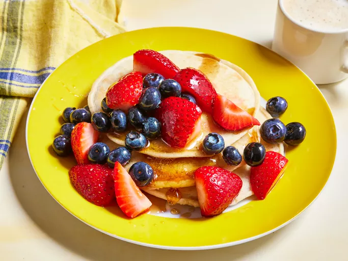

Lasagna

Discription
Pancakes are a classic breakfast food, but can also be enjoyed for brunch or even dessert. They are thin, round, and fluffy cakes made from a batter of flour, milk, eggs, and a leavening agent like baking powder. This leavening agent creates air bubbles in the batter, making the pancakes light and airy. Pancakes are typically cooked on a griddle or frying pan with butter or oil, and then served with sweet toppings like maple syrup, fresh fruit, or whipped cream.
Ingredients
- 1 ¼ cups all-purpose flour
- 2 tablespoons white sugar
- 2 teaspoons baking powder
- ½ teaspoon salt
- 1 ¼ cups water
- 1 tablespoon oil
steps
- Sift flour, sugar, baking powder, and salt into a large bowl; make a well in the center. Whisk together water and oil in a small bowl.
- Pour oil and water into flour mixture.
- Stir just until blended; mixture will be lumpy.
- Heat a lightly oiled griddle over medium-high heat.
- Drop batter by large spoonfuls onto the griddle. Cook until bubbles form and edges are dry. Flip, then cook until bottoms are browned, 1 to 2 minutes. Repeat with remaining batter.
- Serve with berries.